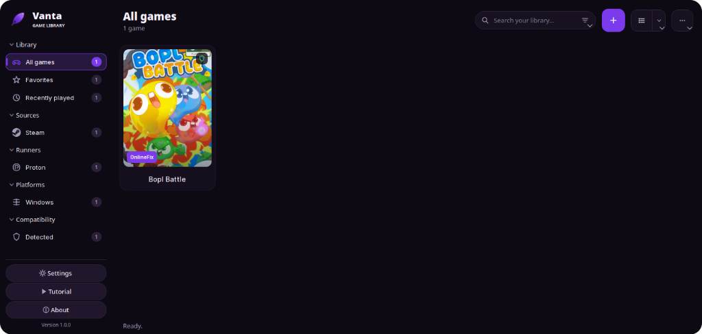

▶ A library that stays yours
Add a game by pointing Vanta at its executable. Native, Wine, Proton, Flatpak and custom wrappers all launch from the same window. A Windows binary is recognised by its PE header, not just its extension.
Vanta keeps a local library of the games you already own, launches native Linux builds and Windows builds through Wine or Proton, discovers the runners other launchers installed, and reports what it finds inside a game folder.
It never downloads a game, and it never claims a detected fix works.

Everything below is in the app today — no roadmap, no placeholder screens.
Add a game by pointing Vanta at its executable. Native, Wine, Proton, Flatpak and custom wrappers all launch from the same window. A Windows binary is recognised by its PE header, not just its extension.
Vanta detects Wine and Proton builds from Steam (including extra Steam libraries), Lutris, Heroic and Bottles — including their Flatpak variants — plus anything you installed from Vanta or configured by hand. Pick the build per game from a dropdown.
BepInEx is detected next to the executable. Enable or disable a plugin by
toggling it — Vanta renames .dll ↔ .dll.disabled
and never edits the file. Add mods from a local .dll or
.zip, or browse the game's community on Thunderstore with
dependency resolution built in.
Vanta reproduces the launcher-side setup: signature detection, INI edits with backups, the FreeTP app-id swap, the Photon Newtonsoft link and launch-only Wine DLL overrides. Every file it touches is backed up first, and it never states that a fix works.
Vanta reads another launcher's library — read-only — and brings the games over with the real runner and prefix. It never writes to, moves or deletes anything owned by Lutris or Heroic.
System, Light, Dark, and Follow system colors, which derives the whole
palette from the active desktop theme — a Breeze Dark session looks like
Breeze Dark. The accent is always Vanta purple, #7c3aed.
Every launch stores its runner output in a terminal-styled log, written while the game is still running, so a game that closed on its own can be diagnosed after the process is gone.
Vanta has no store integration and no acquisition path. It launches the games you already have and reports what it finds — nothing more.
Raw facts, not marketing. Data from each project's public GitHub releases and commit history, read on 9 November 2026.
| Capability | Vanta | Lutris | Heroic | OFLL |
|---|---|---|---|---|
| User interface | C++17 · Qt 6 Widgets | Python · GTK | Electron | PHP web stack |
| Easy mod support BepInEx + Thunderstore |
Built in | — | — | — |
| OnlineFix | Detection + the config you confirm, backed up. Downloads nothing, claims nothing. | — | — | Downloads and installs fixes |
| Lightweight | ~2.6 MB installed, no bundled runtime | Python + GTK stack | Electron runtime | PHP + web server |
| Library porting from another launcher |
Lutris & Heroic | — | — | — |
| Themes | System / Light / Dark / Follow system colors | Yes | Yes | Yes |
| Release cadence | 6 releases in the last 3 days v1.0.0 → v1.1.0, Nov 2026 |
Last stable v0.5.22, Feb 2026 | Roughly monthly latest v2.22.4, Oct 2026 |
Latest v2.7.1, Jul 2026 |
| Downloads games? store / acquisition |
Never — by design | Integrations | Epic, GOG, Amazon, itch.io | Downloads fixes |
| License | AGPL-3.0-only | GPL-3.0 | GPL-3.0 | AGPL-3.0 |
Lutris and Heroic are both actively developed — Lutris has commits from this week even though its last stable release was in February. The row above is about release cadence, not about whether a project is alive. OFLL solves a different problem: it downloads and installs online fixes, while Vanta only configures a game you already own and never fetches anything.
Vanta never downloads games, and detection is a signature match — not proof. Anywhere the app reports an OnlineFix or a mod, it reports what it found and what it changed. It will never tell you a fix works or that a game will run.
Native BepInEx through the run_bepinex.sh doorstop, a per-game
Wine and Proton build picker, faithful porting from Lutris and Heroic, a
persisted filter list, and the launch-log and running-state fixes.